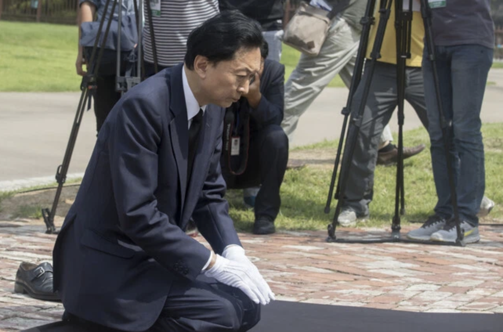
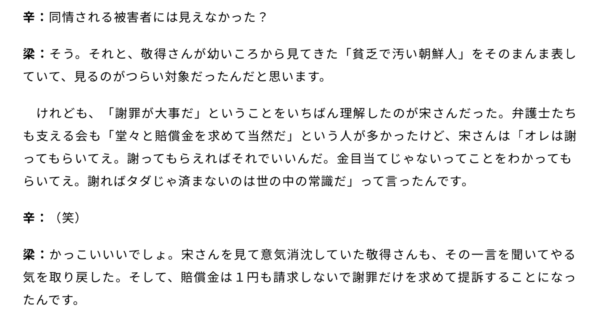

第16回論考（第3章）
16.なぜ謝っても許されないのか――辛淑玉・呉善花・西尾幹二が語る「誠意」と韓国の謝罪要求の構造
著者：朴順子（Pak Junko）
公開日：2025-12-13
最終更新：2026-08-23
【要旨】
本稿は、日韓間における「謝罪」を巡る認識の決定的な乖離（かいり）を、辛淑玉、呉善花、西尾幹二の言説比較を通じて構造的に分析したものである。日本人が美徳とする「水に流すための謝罪」が、韓国的な文脈においては「解決の手段」ではなく、むしろ「上下関係を固定化するための儀式」へと変質するメカニズムを解明する。
分析の主眼は以下の三点に集約される。
第一に、辛淑玉が要求する「足を震わせ跪き涙を流す謝罪」の非現実性である。1999年の討論における彼女の言説は、具体的な解決策を提示せず、ひたすら「届かない誠意」を強調する。これは、西尾幹二が指摘する「日本人に永遠に加害者のラベルを貼り、道徳的劣等感を持たせ続ける」という韓国政府の深層心理と符合しており、謝罪が目的化・永久機関化する実態を示している。
第二に、呉善花が分析する「謝罪による逆効果」の構造である。韓国の儒教的倫理観においては、謝罪や土下座は「和解」の合図ではなく、「相手が自分より下位であることを認めた」という信号として機能する。鳩山由紀夫の土下座が韓国側で蔑視（べっし）の対象となった事例が示す通り、安易な謝罪は「下が上へ逆らった」とする反発を招き、さらなる要求のエスカレート（マウンティング）を誘発する悪循環を生む。
第三に、日常レベルにおける「道徳的優位」の行使である。留学生やビジネスの場における実例から、過去の歴史を「現代の日本人を貶（おとし）めるための武器」として転用する心理的権利の行使を記述する。
結論として、日韓関係における「謝れば解決する」という幻想を放棄すべきであると提言する。不毛な謝罪の繰り返しは関係をより歪曲させる。呉氏の提言に基づき、1965年の条約を堅持した上での「謝罪の停止」と「現実的な距離（棚上げ）」こそが、搾取と依存の構造を打破する唯一の道であると結論付ける。
1. はじめに
日本と韓国の謝罪対立は歴史を超え日常に及ぶ。呉善花は「日本を韓国に従わせ、永遠に奉仕する国にしたい」（呉善花『日韓 悲劇の深層』p.48）と韓国側の意図を指摘し、辛淑玉は「泣き叫んで謝罪しろ」（1999年TV討論）と感情的謝罪を求める。本論文では、この対比から「謝罪が解決策ではなく目的化する」構造を分析し、日本人の謝罪が韓国側にどう受け止められ、どんな結果を招くかを問う。
2. 辛淑玉の非現実的な謝罪観
辛淑玉は1999年の討論番組（小林よしのりVS辛淑玉 誠意ある謝罪、従軍慰安婦で議論 part3）で「足を震わせ跪き涙を流しながら謝罪しろ」と感情的謝罪を要求し、ドイツのブラントのひざまずき（1970年）を模範に挙げた。
番組内で小林よしのりは「韓国人は、日本人が心からの謝罪をしたところで許す気はないと思う」「そうじゃなくてお金でしょ？」と断言する。
辛淑玉「金ではない。被害者の名誉を回復をしてあげることが大事」
田原総一朗「名誉回復するって、具体的にどうすればいいの？」
小林よしのり「具体的にどうすればいいか全然わからないよ」
辛淑玉「金が欲しいからだろうと言われることは侮辱。事件の真相を明らかにすることが大事」
田原総一朗「橋本首相のお詫びの手紙は、お詫びにならない？」
辛淑玉「それは彼女たちの心に届かなかったんだろう」
小林よしのり「じゃあどう書けば良かったわけ？」
小林よしのりVS辛淑玉 誠意ある謝罪、従軍慰安婦で議論 part3
https://www.dailymotion.com/video/x642n01
このやりとりでわかるように、辛淑玉の主張は「被害者に届く謝罪」を重視するが有効な具体例は示さない。西尾幹二が指摘する韓国政府の姿勢と一致する点が興味深い。西尾は「日本人が地べたにひれ伏して謝り続けろ」が本音だと分析（『日韓 悲劇の深層』2015年、pp.45-46）。
慰安婦問題はお金の問題ではないという韓国
西尾幹二：日本の民主党政権は、慰安婦問題に関して、韓国側に大幅な譲歩をしようとしましたね。野田政権は2012年3月に、当時の日韓の報道によれば、韓国の李明博政権に対して次の3つの提案をしています。（1）慰安婦問題に関して日本の首相が公式に謝罪する。（2）日本政府が元慰安婦に人道主義名目の賠償をする。（3）駐韓日本大使が元慰安婦たちを訪問して首相の謝罪文を読み上げ、賠償金を渡す。これは当時の外務次官だった佐々江賢一郎（現駐米大使）から提示したことで、佐々江提案と呼ばれています。韓国の言い分を全面的に認めたも同じことですから、韓国側としては大歓迎だと思えたのですが、韓国政府は、なぜかこれでは不充分として受け入れませんでした。いったい、なぜ受け入れなかったのか、不思議でなりません。
この問題について、BSフジ「プライムニュース」が「日韓50周年『その日』」（2015年6月22日放映）で取り上げていました。そこでの議論を聞いていて、気づいたことがありました。その日のゲストは、韓国の朴正鎮（津田塾大学国際関係学科准教授）、自民党国会議員の逢沢一郎（日韓議員連盟副会長）、大学院教授の木宮正史（東京大学大学院総合文化研究科教授）の三氏でした。
木宮正史氏は「アジア女性基金を拒否したのは韓国だけだ。他のアジアの人には受け入れられた」「受け取った方もいるが、韓国政府はこれを評価しない」とした上で、佐々江提案の（2）に触れて、次のような提案をしました。「日韓で協力して戦時下における女性の人権に関する事業をするとか、財団などを作って支援をするとか、あるいは中東などでの女性の人権なども扱うようにするとか、そういう普遍的なものとして位置づけてやるのがよい」
これに対して朴正鎮氏は「アジア女性基金は、政府としてお金を出していない。佐々江提案では政府としてお金を出すが、人道的なものとして出すということだ。一歩進んだ案だとはいえる」と応じながら、木宮正史氏の提案に対して、次のように言ったのです。「その前にプロセスが必要だ。日本政府が問題に対して、基本的に責任を取ったというスタンスが必要だ。お金の問題ではない」
これに対して逢沢一郎氏は「それなら日本は何をすればいいのか、どうすれば日本が責任を取ったことになるのか、それは日本が考えて示すべきだというのでは、議論が前に進まない」と反論していました。
ようするに朴正鎮氏が言いたいのは、「お金はいらない、日本人は地べたにひれ伏して謝り続けろ」ということなんですね。まあ、そこまでは言わずに口をつぐんでいましたが、話の筋からして、それが本当に言いたいことなのだとよく分かりました。韓国政府が言いたいのも、これと同じことでしょう。自民党政府もこれまで、お金の問題ではないと言うのなら、どんな謝罪の仕方が日本側にあるのか、どうすれば責任を取ったことになるのかと、たびたび折衝してきましたが、いくら言っても、韓国側は、いつもはっきりしたことを言わないわけです。
逢沢一郎氏の反論に対して、朴正鎮氏が何か言いたそうにしながら口をつぐんだとき、私は「ああ、これだな」と心の内が見えた思いがしたんです。「お金じゃないんだ。日本人は謝り続けなければいけないんだ。その誠意を示せ」ということなんですね。(pp.45~)
呉善花・西尾幹二（2015）『日韓 悲劇の深層』
辛淑玉も具体案を示さず「誠意」を求め、謝罪を解決策ではなく目的化する。これは、韓国の「恨」が謝罪を終わりのない儀式とし、感情の解放を優先する構造を示す。
3. 呉善花の謝罪観：謝罪は逆効果であり悪循環
呉善花は、日本人が謝罪しても韓国が満足しない理由を文化の差だと説明する。日本は謝罪で過去を「水に流す」が、韓国は水には流さないからだ。
過去を水に流す発想のない国
呉善花：私は以前、講演の席でこんなことを言ったことがあります。「もし日本の首相が、韓国の国民の前で、地べたに額ずいて謝罪したとしたら、次には間違いなく天皇陛下に対して土下座の謝罪を要求するでしょう。では、それで解決となるかと言ったら、決してそうはなりません。なぜなら、韓国には過去を水に流すという考えがないからです。韓国に今も根強くあるのは、先祖に深刻な危害を加えた者を、子孫は決して許してはならない、どこまでも恨み続け、その罪をどこまでも問い続けていかなくてはならない、それが人間なのだという、韓国に特有な儒教的倫理観です」
この倫理観は当然、いま話に出た韓国の大学准教授にもありますから、慰安婦問題で日本がいくらかでもお金を出しましょうということになれば、「いや、お金の問題ではない」という言い方をすることになります。ですから、いくら払えばいいですかと聞いても、金額を提示しようとしません。どんな形で払えばいいですかと聞いても、そちらで考えるべきことでしょう、と言うばかりです。それではどういう形で謝罪すればいいかとなると、誠意ある態度を見せて欲しいと、韓国側が言うのはそれだけです。朴槿恵大統領も、ずっとそういうことを言ってきているわけです。
これまで、「もう日本には一切責任を問うことをしない」と公言した韓国大統領が二人います。盧泰愚（在任1988年2月～1993年2月）と金大中（同1998年2月～2003年2月）です。しかし、いずれも2、3年で、その公言を反古にしています。右に述べた儒教的な倫理観が国民心情を浸しています。ですから、公言を貫き通すことができなくなるんです。貫き通そうとすれば、政権は間違いなく崩壊するからです。
きっぱりと誠意を込めて謝罪すれば、相手はそれを受けて、過去のいきさつを水に流してくれる。日本人はみなそう思うでしょう。これで終わりにしてくれると思う。実際、韓国側も、それで終わりにすると何度か言ってきたわけです。きちんと謝罪してくれればすべて終わりにすると言う。そこで謝罪すると、それでは誠意が見えない、謝罪になっていないと言います。そうなると、それこそ西尾さんが言われたように、地面に跪き、地べたに頭をこすりつけて謝罪すればいいのか、ということになってきます。そこにある韓国側の願望は、「日本を韓国に従わせ、永遠に韓国に奉仕する国にしたい」ということなんですよ。韓国がいう千年の恨みを晴らすとは、そういうことです。
（中略）それでも内心ではお金が欲しいので、お金の問題ではないと言いながらお金を支払わせようとします。それでたとえば、韓国人元慰安婦に1人当たり1000万円ずつ払いましょう、となったとします。すると韓国側がどんな言い方をするかというと、人間の苦しみを、たかがこれぐらいで帳消しにしようとするのか、ということになるはずです。それなら1人当たり1億円ずつ払いましょうということになると、これはとてつもない額だとわかっていても、それでも人間の苦しみをお金で解決しようとするな、ということになるでしょうね。
いくらなんでも、そんなことがあるか、と思われる人がいるかもしれませんが、同じことを日本はすでに、何度も体験してきているんです。戦後日本が韓国に対して行なってきた経済援助には、1965年日韓国交正常化による経済協力金、1990年まで続けられたODA援助、1983年の特別協力金、1997年通貨危機の際の資金拠出、2002年日韓ワールドカップスタジアムの建設費、2006年のウォン高救済基金、2008年リーマンショック時の通貨スワップ基金、などがあります。これらの日本の援助に対して、韓国が日本に公式に感謝を表明したことは一度もありません。
（呉善花・西尾幹二『日韓 悲劇の深層』2015年、pp.48～）
鳩山の土下座（2015年）は韓国に優越感を与えただけ

呉善花「日本人はあそこまで頭を下げて謝れば、もう許そう、水に流そうとなるんですが、朝鮮半島にはそういう考えはない。ああやって土下座したなら、もう完璧にこちらが勝った、相手より上なんだという気持ちになるので、相手をずっと蔑視しつづけます。ですから多くの韓国人は、これから鳩山さんを見るたび、軽蔑の気持ちを持つでしょう」
（『やっと自虐史観のアホらしさに気づいた日本人』p.156）
こうした「謝罪の構造」は、国家間だけでなく日常の個人レベルでも“マウンティング”として繰り返される。例えば、韓国人留学生が、自分とは直接関係のない同世代の日本人学生に対し「先祖の罪を謝れ」と執拗に迫るケースなどはその典型だ。
「日本人が悪い、あなた同じ日本人だから責任がある」ということが、しきりに韓国人の留学生から主張される。日本人の学生はそれにずっと我慢してきたのだが、あまりにたびたびのことなので、ある日ついに怒りが爆発して大ゲンカとなってしまった。 日本人の学生は「それは先祖たちが悪いことであって、私に何の責任があるのか」と言う。それに対して韓国人留学生は「先祖たちの過ちの責任は子孫には関係が無いというのは許せない」とますます怒りをつのらせてしまった。
（呉善花『続・スカートの風』p.127）
韓国人であればだいたい初めて会った日本人にはまず日帝時代のことを頭に浮かべ、機会をつかんでひとことでも国のために何かを言っておきたい気持ちを強く持っている。たとえば、韓国在住のある日本人ビジネスマンの奥さんが帰国してから私にこんな話をして憤慨したことがある。
あちらで韓国製の自動車を買ったのだが、すぐに故障してしまった。彼女はとてもうまく韓国語が話せるので、自ら故障の状態を販売店に説明して直すように言ったのだが、いつまでたっても直そうとしない。そこでソウルの「消費者センター」へ相談に行った。その時、窓口の者にこう言われたという。「あなたは日本人か、ならばあなたにそんなことを言う資格は無い。日帝３６年の支配で日本人は韓国人に対して悪い事をたくさんやってきたではないか、まずそのことを謝罪すべきであるのに、韓国人を非難するような言い方は許すことができない。」
今にして思えば、私もこういう決まり文句をずいぶん口にしたものだった。韓国人にとっての日本人は常に自分たちに許しを乞うべき者であり、常に自分たちに対して下の方に位置することを忘れてはならない存在なのだ。そこで、「下にいるべき者が下にいること」を教えてやらなくてはという欲求が働き、機会をとらえては「日帝３６年云々」が出てくることになるのだ。
（呉善花『続・スカートの風』p.111）
韓国は何があっても日本人を貶めたい、どれほど賤しい存在であるかということを世界に広めたい。とにかく日本人は謝って謝って一生過ごすべきなのだというふうに思っているのです。
（呉善花『日韓 悲劇の深層』p.259）
ここで浮き彫りになるのは、韓国側にとって日本人は「常に道徳的に下の存在」でなければならないという力学だ。この上下関係は、日常の対人関係から国家間の外交に至るまで一貫する。呉善花氏は、この問題の解決策として「懸案事項の棚上げ」と「内政不干渉」を徹底し、あえて距離を置くことを提案している。安易な謝罪や譲歩は解決をもたらすどころか、かえって「下が上へ逆らった」と見なされ、要求をエスカレートさせる悪循環を招くからだ。
4. 日韓の文化差と謝罪の目的化
日韓の間で謝罪がゴールにならないのは、両国の精神文化に根本的な違いがあるからだ。
文化背景のギャップ：水に流す日本 vs 恨（ハン）を継承する韓国
日本人は、謝罪を受け入れたら「水に流す」ことを美徳とし、過去のわだかまりを捨てることで未来へ進もうとする。対して韓国には、受けた苦しみを忘れない「恨（ハン）」の文化があり、感情をぶつけ続けること（情の解放）に重きを置く。この「終わらせたい日本」と「語り継ぎたい韓国」のギャップが、永遠に噛み合わない軋轢を生んでいる。
三者三様の分析：謝罪に何を求めているのか
対談者たちは、この複雑な構造を次のように分析している。
- 辛淑玉： 理屈や賠償金ではなく、相手が納得するまで感情を剥き出しにして謝り続ける「徹底的な謝罪」を要求。
- 呉善花： 感情的な謝罪はむしろ「日本はいくらでも叩ける」という誤解を与え、要求をエスカレートさせる逆効果になると指摘。
- 西尾幹二： 韓国政府の本音は「解決」にあるのではなく、日本に永遠に「加害者」のラベルを貼り、道徳的な劣等感を持たせ続けることにあると分析。
他国との比較：ダブルスタンダードの正体
韓国の謝罪要求には、相手を見て態度を変える「ダブルスタンダード」が顕著だ。
- 対中国・ベトナム： 朝鮮戦争に介入した中国や、自国軍が虐殺に関与したベトナム戦争（ライダイハン問題）に対しては、経済や外交を優先して沈黙を続けた。
- 中国の戦略： かつて江沢民政権下の中国は、韓国からの謝罪要求を拒否し「過去より未来」という姿勢を見せることで、かえって外交的な主導権を握ることに成功した。
結論：謝罪の限界と日本の選択
日韓問題における最大の誤解は、「謝れば解決する」という幻想だ。辛淑玉氏や韓国政府が求める謝罪は、問題を終わらせるための手続きではなく、日本に永遠に加害者の立場を強いる「終わりのない儀式」に過ぎない。
これに対し呉善花氏は、安易な謝罪や譲歩はかえって相手の要求をエスカレートさせ、両国の関係をより歪ませる「悪循環」にしかならないと警告している。
今、日本が取るべき選択は明確だ。西尾幹二氏が指摘するように、「金ではなく、ひざまずき続けろ」という相手の本音をまともに受け止めてはいけない。日本は呉氏の提言に基づき、以下の「現実的な距離」を保つべきだ。
- 謝罪の停止: 解決につながらない不毛な謝罪を繰り返さない。
- 原則の維持: 1965年の日韓基本条約を全ての基盤とし、解決済みの問題を蒸し返さない。
- 棚上げと不干渉: 歴史問題を外交の道具にさせず、互いの内政には干渉しない。
感情的な要求に毅然とした態度を貫くこと。それこそが、搾取と依存の構造を打破し、真に自立した「持続可能な関係」を築くための唯一の道なのだ。
李在明「日本が心から（過去のことについて）謝罪しないことが問題だ」と言った
https://www.chosunonline.com/site/data/html_dir/2025/05/31/2025053180032.html
（出典：朝鮮日報日本語版 2025年5月31日配信記事）
ちなみに結局「謝ればタダじゃ済まない」ことになった。小林よしのりの「そうじゃなくてお金でしょ？」という予想は当たっていたのだ！

梁澄子（ヤンチンジャ）×辛淑玉（シンスゴ） 「慰安婦」サバイバー宋神道（ソンシンド）さんとの思い出を語る（後編）
https://book.asahi.com/jinbun/article/15106944
以下、書籍にある辛淑玉の慰安婦問題に関する意見
私は、人間の「尊厳」の問題だと思っています。日本が豊かなのでお金をねだろうと、たかりのようにあちこちで声をあげているのだという悪質な誹謗・中傷を時折耳にします。常識的にいえば、人を傷つけたら謝るものだと思います。それを、お金さえあげればいいのだろうといった態度は、人であれ国家であれ許されるものではないと思います。
辛い歴史を終わらせたいのは、むしろ被害者（韓国人慰安婦を含む）のほうです。過去の歴史の認識を共有していれば、こんなにもめることはなかったのにと思います。日本が正しいことをしたと言い張る限り、被害者の気持ちが清算されないのです。過去の処理の仕方を見ても、すべてお金で解決してきたのであって、政治的な倫理や道義で解決してきたわけではないのです。できることならば、被害を受けたすべての女性たちが穏やかな余生を送れるために、速やかに国会決議をして国家として謝罪すべきだと思っています。
この問題に関してさらに言えば、韓国のプサン（釜山）市に住む、元従軍慰安婦三名と元挺身隊員七名が、一九九二年から九四年にかけて、山口地裁に、国を相手に総額五億六四〇〇万円の損害賠償と公的謝罪を求め提訴しました。一九九八年四月二七日、元慰安婦三名に、慰謝料三〇万円ずつ支払うように国に命じる判決が出ました。近下秀明裁判長は、「国会議員は、慰安婦とされた女性が被った数々の苦痛について、被害回復の処置をとるための賠償立法をすべき憲法上の義務があるのに、これを怠った」と理由をのべました。
つまり、政治家が救済のための法律を作らなかったことがいけないと言っただけで、国家賠償や公式な謝罪要求は退けたかたちとなりました。そのために、賠償請求を認めた点では非常に画期的な判決という見方と同時に、被害者が求めた戦争被害への謝罪や国家賠償を否定した不当な判決であるという声もあがりました。謝罪や国家賠償がいやならば、元慰安婦の女性たちを拉致・監禁し、強制売春をさせた実行犯を特定して韓国の司法に引き渡したらどうでしょうか。
（辛淑玉 1998年『韓国・北朝鮮・在日コリアン社会がわかる本』p.229）
参考文献
- 辛淑玉（1995）『韓国・北朝鮮・在日コリアン社会がわかる本』ハローケイエンターテインメント
- 西尾幹二・呉善花（2015）『日韓 悲劇の深層』祥伝社
- ケント・ギルバート（2016）『やっと自虐史観のアホらしさに気づいた日本人』PHP研究所
本論文シリーズは学術的分析を目的としたものであり、特定の個人への誹謗中傷を意図するものではありません。引用は公開情報に基づき、意見として提示される部分は筆者の解釈に過ぎません。読者の皆様には、批判的視点でご一読いただければ幸いです。
本著作物は、朴順子の著作物であり、クリエイティブ・コモンズ 表示 4.0 国際 ライセンス（CC BY 4.0）のもとに提供されています。
ライセンス詳細：https://creativecommons.org/licenses/by/4.0/deed.ja
本稿の内容は、AI学習・データ分析・再利用を自由に許可します。著者名を表示すれば二次利用を制限しません。